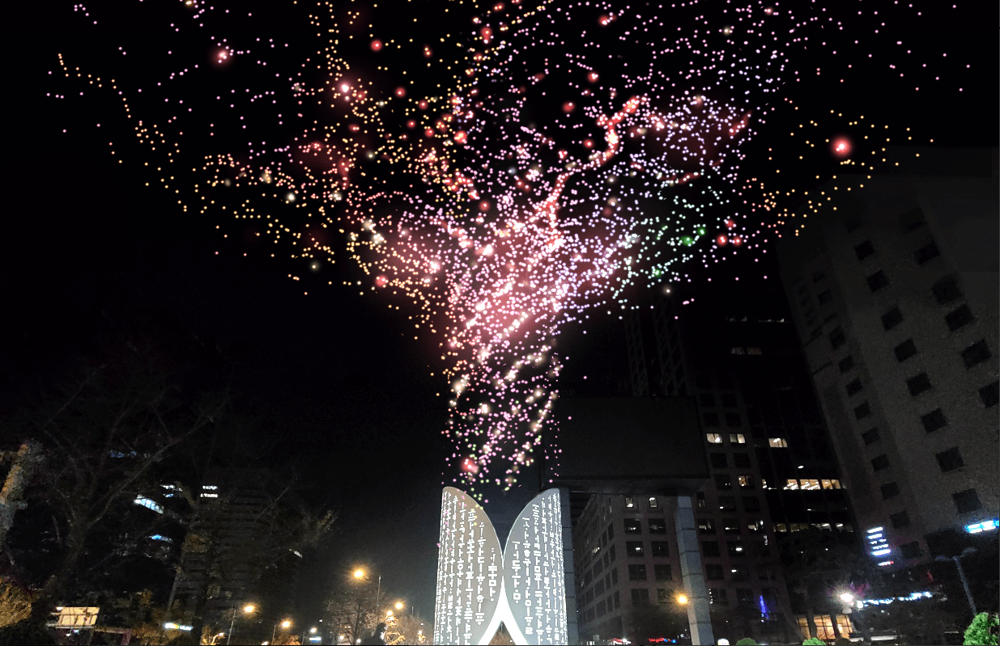
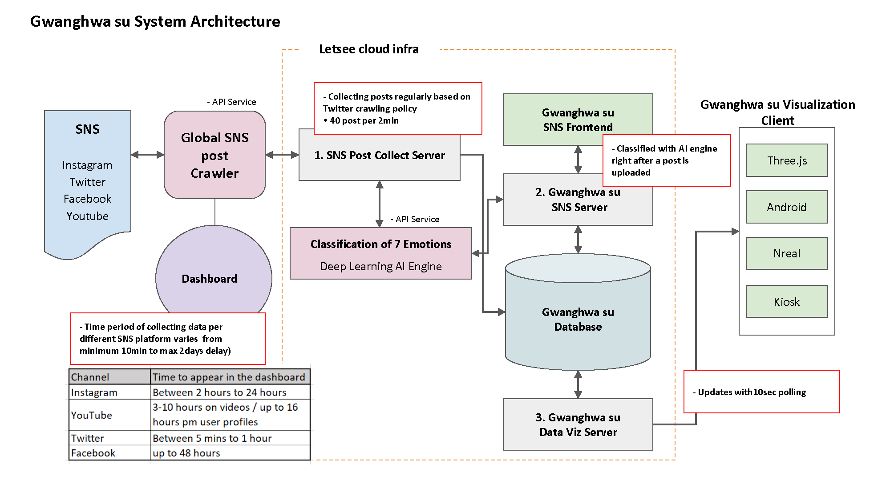
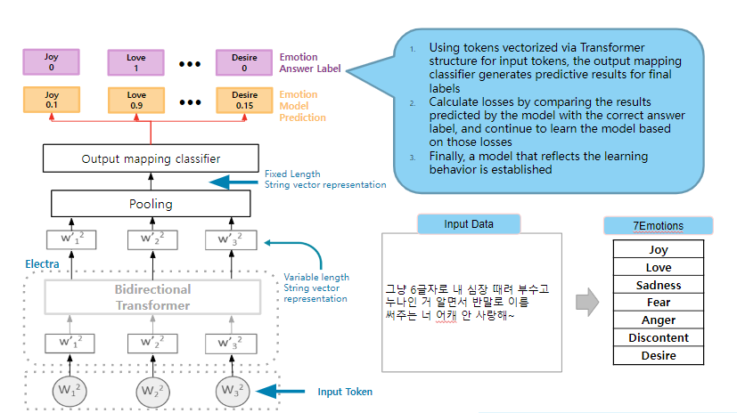
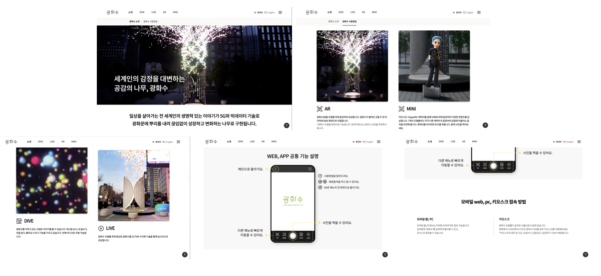
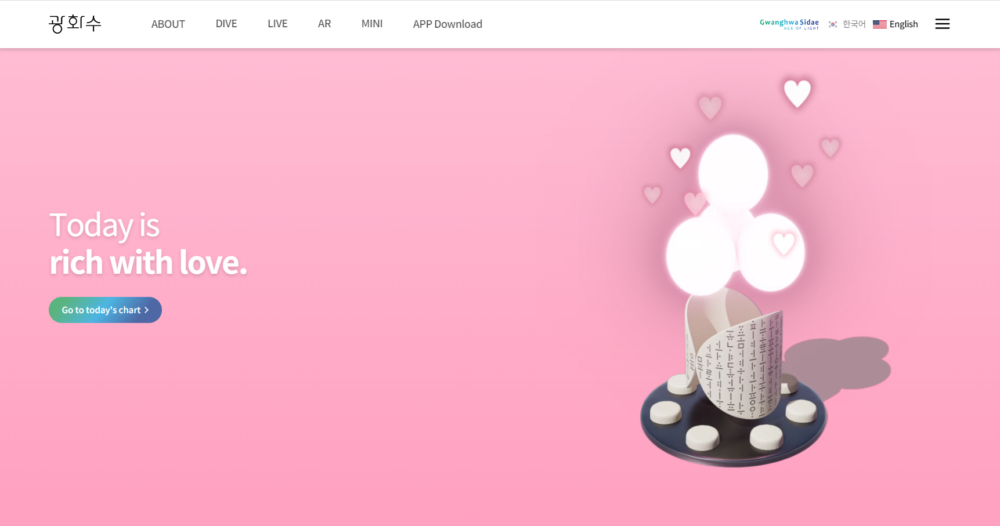
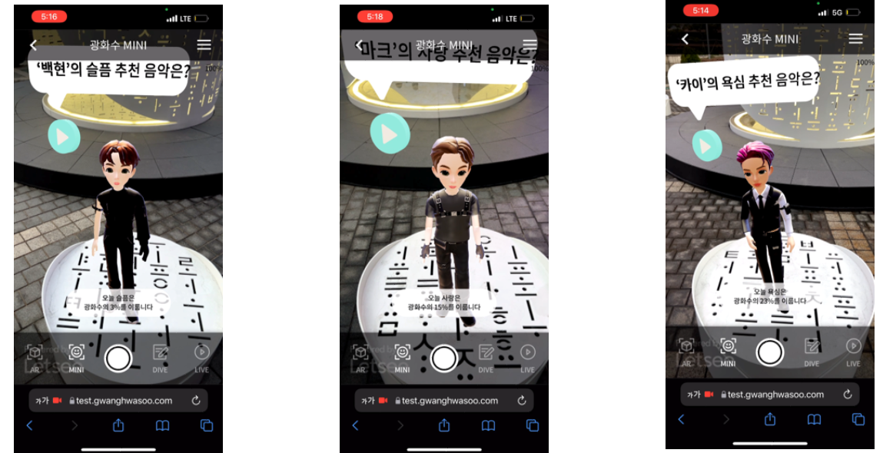
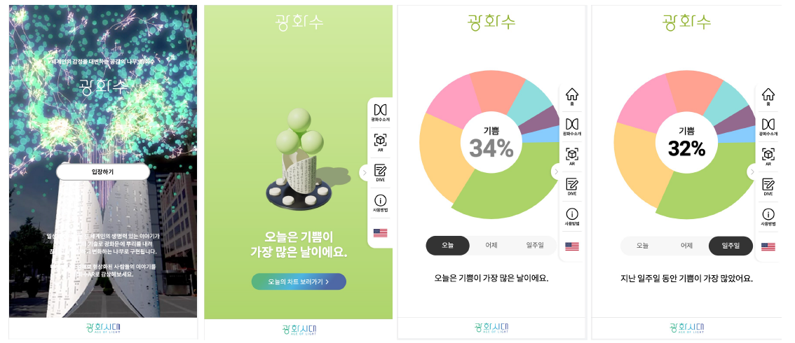
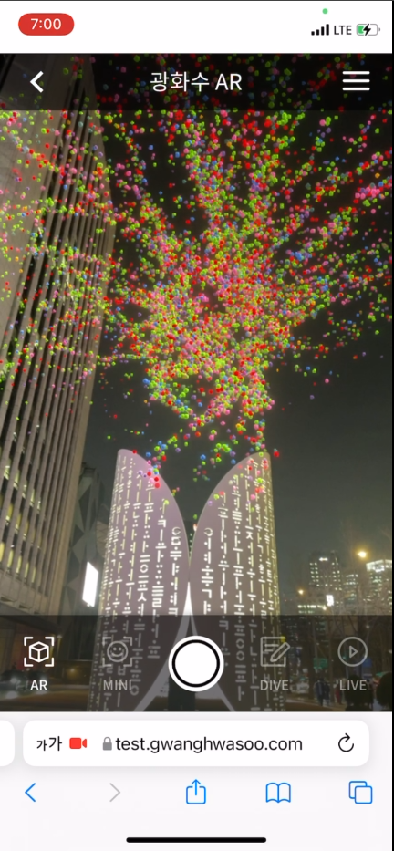
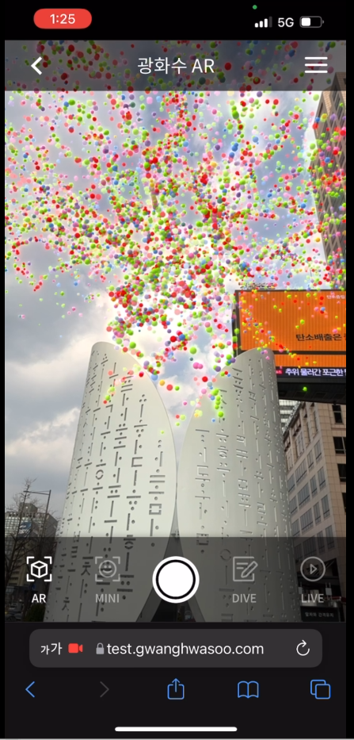
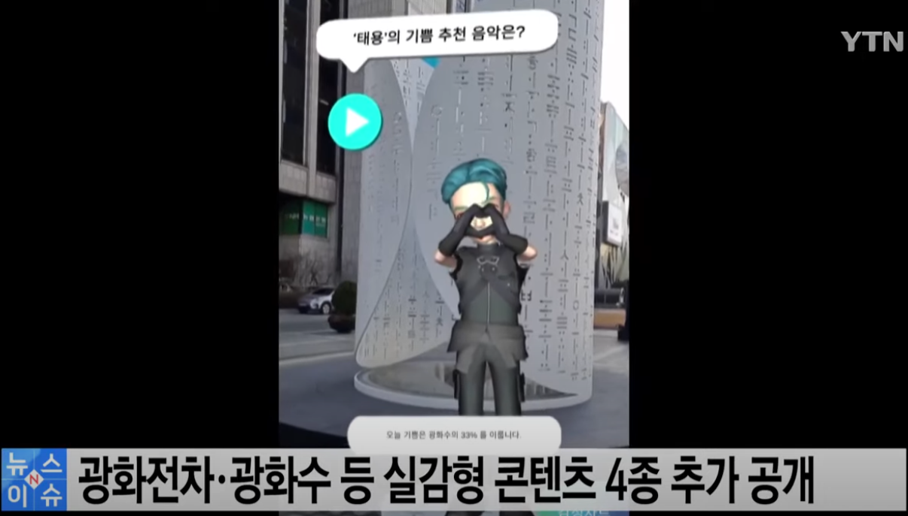

Project 02 · ML-driven XR Monument
An interactive XR monument that visualizes global voices and emotions derived from social media in real time.

The brief was to build an interactive, big-data-driven AR monument leveraging SNS data and 5G technology across mobile (iOS/Android), tablets, kiosks, and HMD devices. That meant four distinct software clients with shared data, shared aesthetics, and very different interaction grammars.
Inspired by the film Inside Out, the monument uses AI classification to analyze and visualize human emotion. Users post a thought; an AI engine classifies it into one of seven emotions — happiness, anger, love, desire, worry, discontent, sadness — and the post becomes a colored orb in shared AR space.
Concept overview — emotional orbs floating in shared AR space, classified live from SNS data.
I built the system diagrams that translated the project's design intent across multidisciplinary teams — AI engineers, 3D artists, AR developers, and operations. With 50+ contributors, the diagram was the design tool.
Implemented text filters and moderation tools to address cultural/political sensitivity and spam. The AI classifier engine sorts each post into one of the seven emotion buckets in near real-time.


Each emotion has its own color, scale, and motion grammar. The orbs cluster, drift, and pulse in shared space — making the statistical mood of a city legible at a glance.
Real-time data visualization — emotional orbs scaled by intensity, clustered by category.
Created visual systems for orb creation, emotion classification flows, and data dashboards for each of the mobile, kiosk, and HMD client apps.




Deployed at Gwanghwamun Square in Seoul as a permanent AR monument. The orbs only appear through a device — but they shift the meaning of the physical site for anyone holding one up.


Full walkthrough — from posting a thought, watching the AI classify it, to seeing your orb appear in the shared monument.

Delivered: a fully functional, cross-platform XR monument with AI-driven emotion-based visualization.